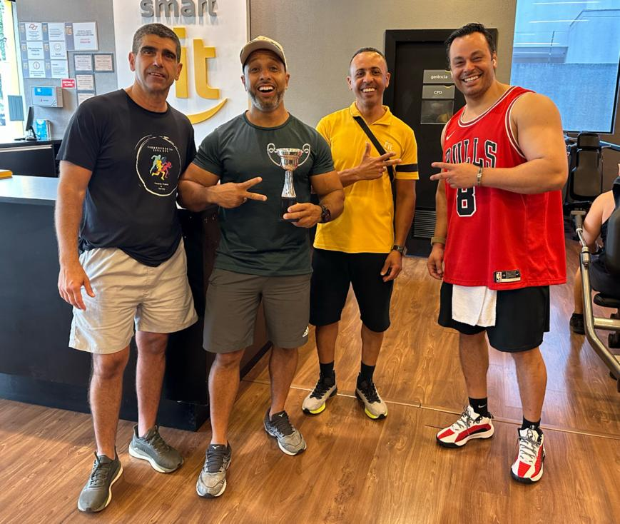
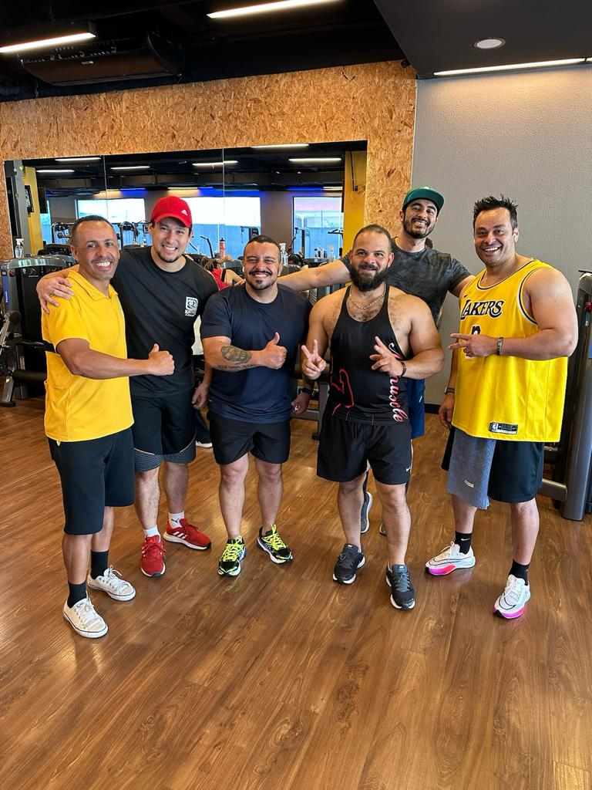
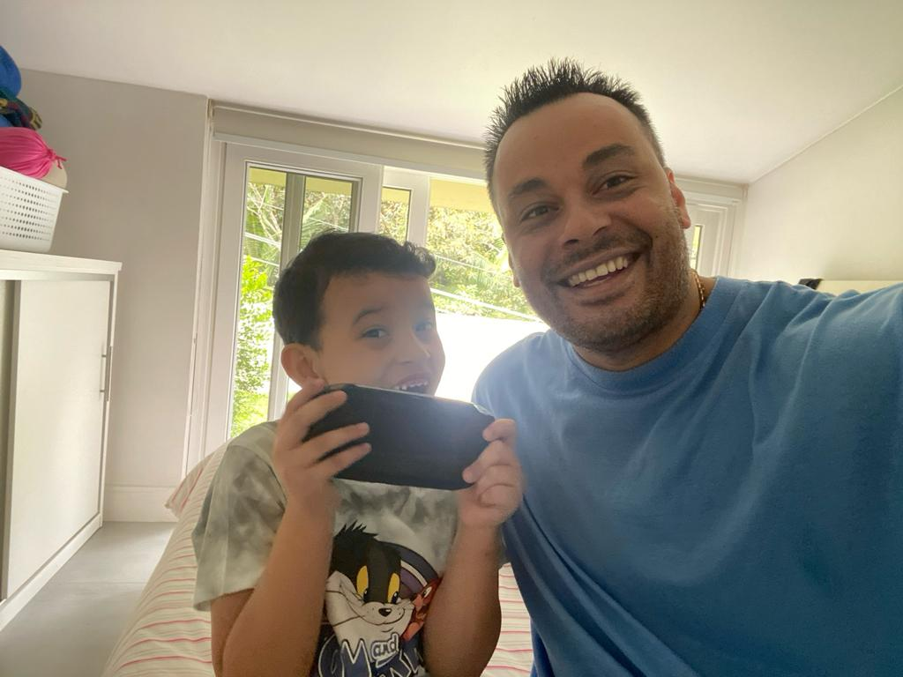
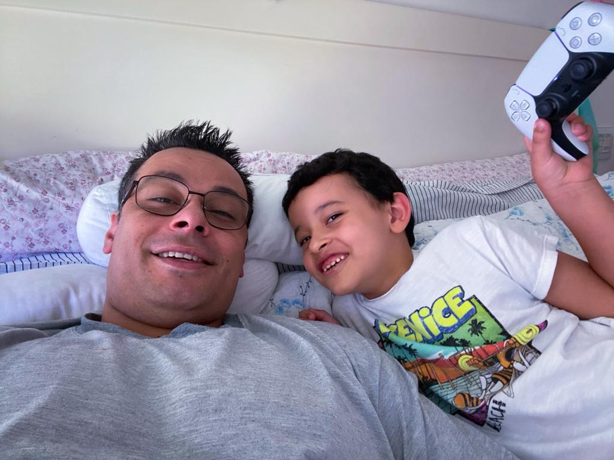
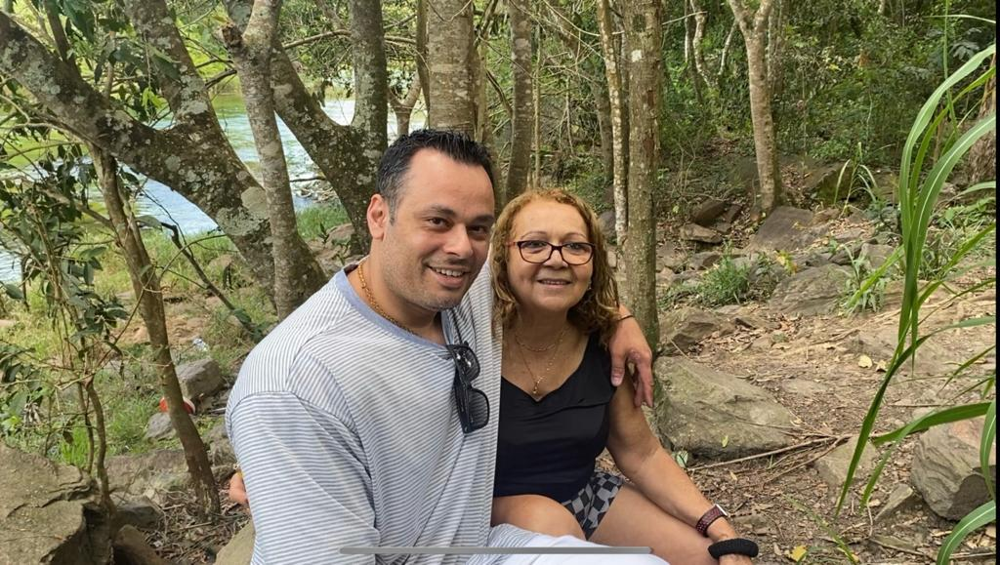

A musculação sempre ocupou um lugar especial no meu coração, uma paixão que nasceu na minha juventude. Naquela época, eu era incrivelmente magro e estava constantemente buscando maneiras de ganhar peso e construir um corpo mais saudável e forte.
O ambiente da academia era motivador, cheio de pessoas determinadas a atingir seus objetivos de condicionamento físico. Eu me sentia inspirado por todos ao meu redor e estava ansioso para embarcar nessa jornada de autodescoberta e transformação.
Ao longo dos anos, a musculação se tornou mais do que apenas um meio de ganhar peso e construir músculos; tornou-se um estilo de vida. A disciplina, a dedicação e a persistência necessárias para atingir meus objetivos na academia refletiram-se em outras áreas da minha vida. Aprendi que a verdadeira força não está apenas nos músculos, mas também na mente.
Ver meu corpo se transformar, ganhar massa muscular e definição ao longo do tempo foi incrivelmente gratificante. Cheguei dos 59kg aos 110kg. Cada levantamento de peso, cada repetição, representava um passo em direção ao meu objetivo. Com o tempo, comecei a sentir-me mais confiante, energizado e saudável. A musculação não apenas mudou minha aparência, mas também minha perspectiva de vida.
Hoje, a musculação continua sendo uma parte essencial da minha rotina. É mais do que apenas um hobby; é uma paixão que me ensinou lições valiosas sobre perseverança, autocontrole e superação de desafios. Eu sempre serei grato por ter encontrado esse caminho e por ter tido a oportunidade de transformar minha juventude magra em uma jornada de força e vitalidade. A musculação não é apenas sobre ganhar músculos; é sobre ganhar confiança, saúde e autoestima.
Amigo que ganhou quase 1 ano de academia grátis por ter trazido toda família.

Despedida do Professor que Conseguiu Transferência de Unidade.

Campeonato de Supino 2021
Embora minha vida esteja repleta de responsabilidades e compromissos, há uma paixão que sempre encontra um lugar especial nos meus momentos de folga:
jogar videogames.
Essa é uma atividade que sempre me encantou, mesmo quando o tempo para desfrutá-la é escasso.
O mundo dos videogames é um universo fascinante, repleto de aventuras emocionantes, desafios intelectuais e histórias envolventes. Quando finalmente consigo um horário livre, a sensação de mergulhar em um jogo é indescritível. É uma oportunidade de escapar da realidade por um tempo, explorar mundos fantásticos e viver experiências únicas.
O que torna os videogames ainda mais especiais para mim é a diversidade de gêneros e estilos disponíveis. Posso escolher entre aventuras épicas, quebra-cabeças intrigantes, competições multiplayer emocionantes e muito mais. Cada jogo é uma jornada única, e a variedade me permite sempre encontrar algo que se encaixe no meu humor do momento.
Apesar das obrigações da vida cotidiana, sempre encontro um jeito de encaixar um tempinho para jogar. Pode ser uma partida rápida durante uma pausa no trabalho ou uma sessão mais longa durante o fim de semana. A sensação de estar imerso em um jogo, concentrado em superar desafios e atingir objetivos, é uma forma incrível de relaxar e recarregar minhas energias.
Além disso, os videogames também têm um componente social. Jogar com amigos, seja online ou em uma sala de estar, cria laços e proporciona momentos de diversão compartilhada. É uma maneira de me conectar com pessoas que compartilham a mesma paixão, não importa onde estejam no mundo.
Em resumo, apesar da falta de tempo, minha paixão por videogames permanece firme. Quando tenho a oportunidade de jogar, é um momento precioso que valorizo profundamente. É uma forma de me desconectar do mundo exterior e me perder em aventuras digitais, e é algo que sempre guardarei com carinho em meio às demandas da vida adulta.
Passar tempo de qualidade com meu filho é uma das experiências mais gratificantes e alegres da minha vida. Entre as muitas atividades que compartilhamos, jogar videogames é uma das que mais nos aproximam e nos fazem sorrir juntos.
Desde cedo, meu filho mostrou interesse pelos videogames. Lembro-me da primeira vez que ele segurou um controle, os olhos brilhando de empolgação. Naquele momento, eu sabia que essa seria uma paixão compartilhada entre nós. À medida que ele cresceu, nossas sessões de jogos se tornaram uma tradição divertida em nosso relacionamento.
É incrível como os videogames podem unir pais e filho. Juntos, exploramos mundos virtuais, enfrentamos desafios emocionantes e compartilhamos risadas diante das situações mais inesperadas. Cada jogo se torna uma aventura em que trabalhamos em equipe, tomamos decisões estratégicas e celebramos nossas conquistas.
Além dos videogames, também aproveitamos outras atividades juntos. Fazemos caminhadas ao ar livre, onde exploramos a natureza e conversamos sobre a vida. Assistimos a filmes e séries que nos cativam, proporcionando oportunidades para discussões interessantes. Cozinhamos juntos, experimentando novas receitas e sabores.
No entanto, são os momentos de jogatina que realmente destacam nossa conexão. Não importa se estamos competindo em partidas acirradas ou trabalhando juntos em um jogo cooperativo, essas sessões são momentos especiais que fortalecem nosso vínculo. É durante essas horas de diversão que compartilhamos histórias, aprendemos a lidar com vitórias e derrotas e criamos memórias que lembraremos para sempre.
Ver meu filho crescer e desenvolver habilidades no mundo dos videogames é incrivelmente gratificante. Mas, além disso, é a oportunidade de ser um participante ativo em sua vida, de conhecer seus interesses e gostos, que torna esses momentos tão especiais. O videogame se tornou uma linguagem comum que nos permite nos comunicar de uma forma única e significativa.
À medida que continuamos a explorar novos jogos e desafios, sei que nossa jornada de diversão e aprendizado está longe de acabar. Apreciamos cada oportunidade que temos para nos divertir, crescer e fortalecer nosso relacionamento, e aguardamos ansiosamente as muitas aventuras que ainda estão por vir.
Jogando PSP com o meu filho.

jogando PS5 no fim de semana.

Passeio de Domingo com a esposa

Passeando com meu filho no Shopping